Fragmented workflow
Composite participants used three or more tools in one review cycle.
Creative review, without the version chaos.
A focused workspace for comparing versions, resolving contextual feedback, approving the right file and delivering with confidence.
Revision Room keeps artwork, feedback, versions and approvals in one continuous decision trail.
The concept is designed for independent creatives and client teams who need the precision of a professional review tool without professional-tool complexity.
Instead of adding another general collaboration platform, the product stays intentionally narrow: review the work, resolve the conversation, approve the exact version and release the final package.
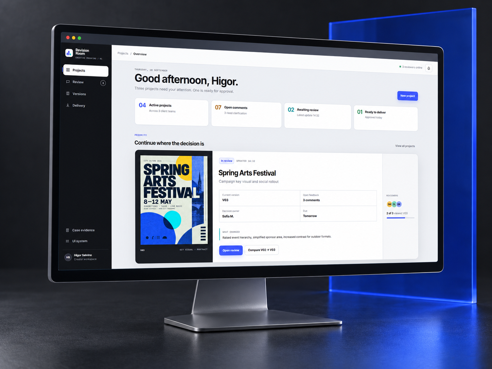
Creative approvals are often split between messages, email, cloud links, PDFs and calls. The result is a workflow where the latest file, the location of a comment and the meaning of “approved” can all become uncertain.
Synthetic evidence used to structure assumptions · not market research.Composite participants used three or more tools in one review cycle.
They described difficulty identifying the latest file.
Comments arrived without an exact visual location.
Conversational language was mistaken for formal approval.
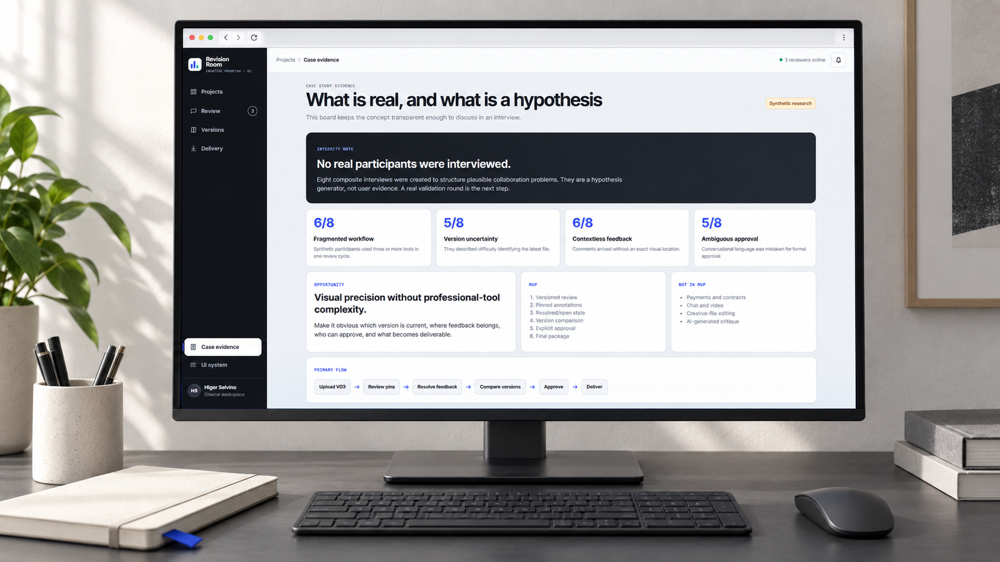
No real participants were interviewed. Eight composite interviews were created to structure plausible collaboration problems. They are a hypothesis generator, not user evidence.
The dashboard does not compete with the artwork. It shows the current version, the decision owner, unresolved feedback and the next action in one view.
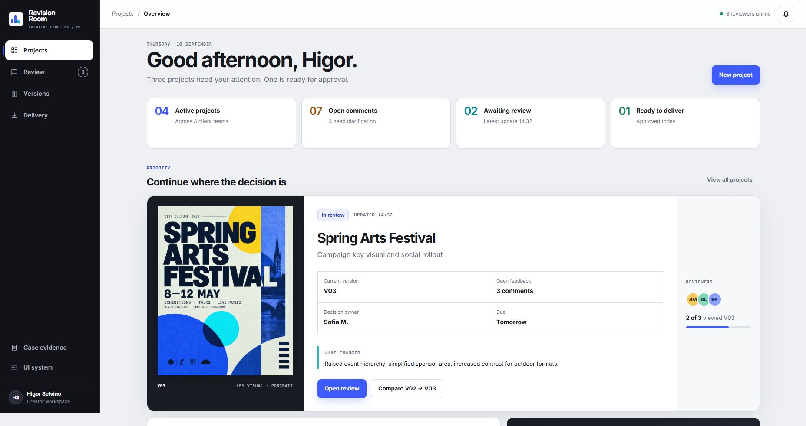
Every note carries a reviewer, timestamp, comment state and version relationship. Reviewers can resolve a comment without erasing the history behind the decision.
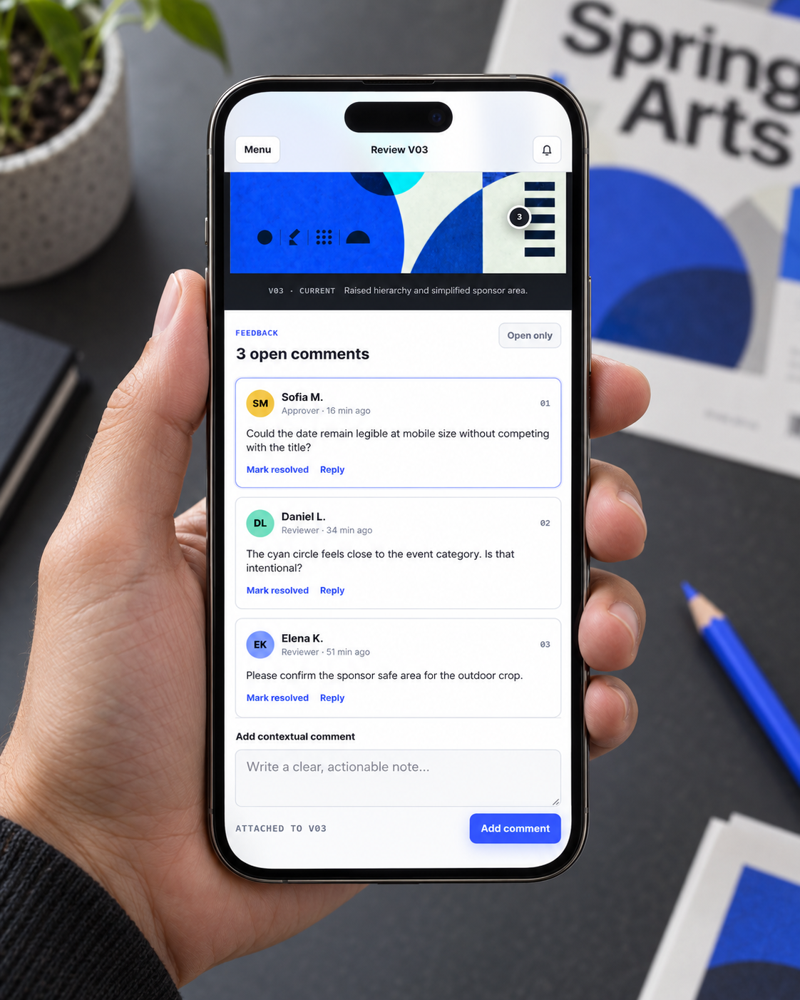
The comparison view aligns the same artwork in the same position so reviewers can inspect the visual consequence of a decision instead of reconstructing it from memory.
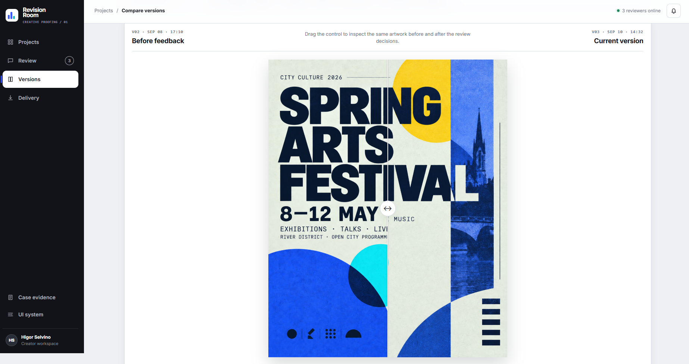
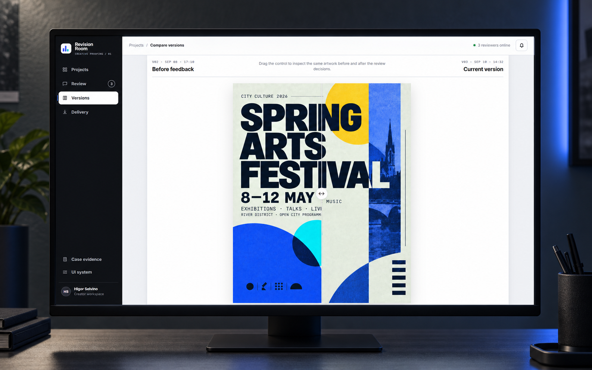
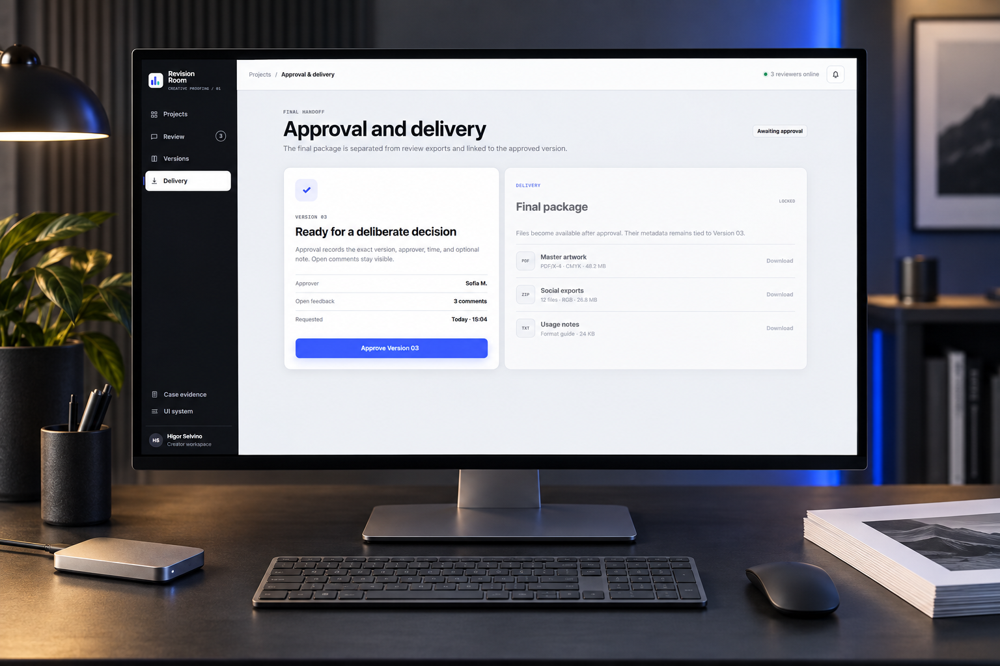
The approval step records the exact version, approver, time and optional note. Delivery stays locked until that decision is explicit, while unresolved comments remain visible.
The mobile experience keeps the hierarchy deliberately narrow: artwork first, open feedback next and one clear action at a time.
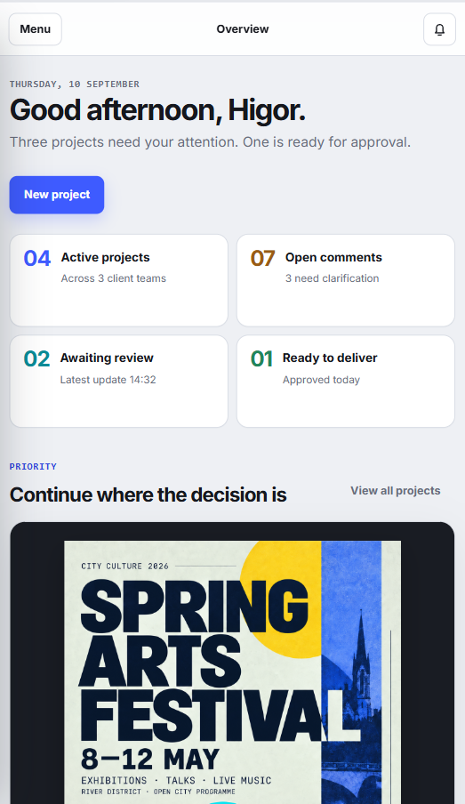
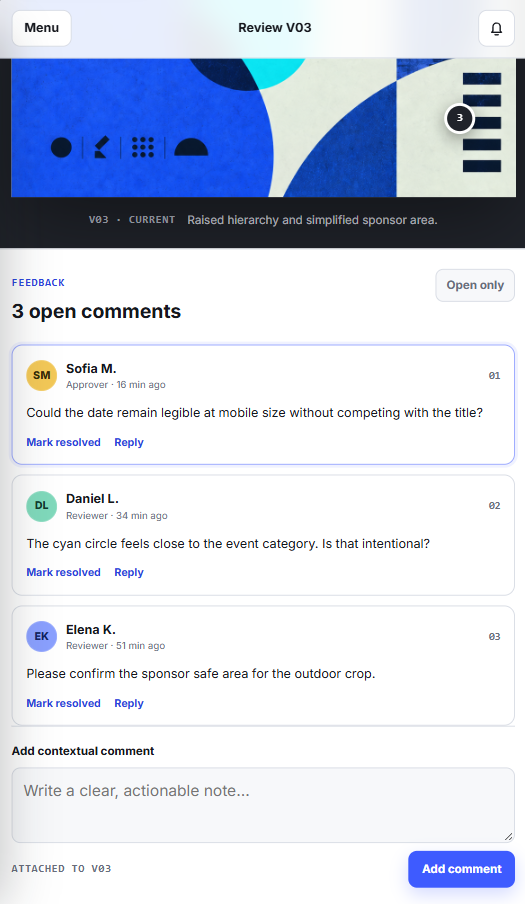
A compact visual language pairs a direct system sans with monospaced metadata. Cobalt signals primary action; cyan, green, amber and red communicate meaningful states without relying on color alone.
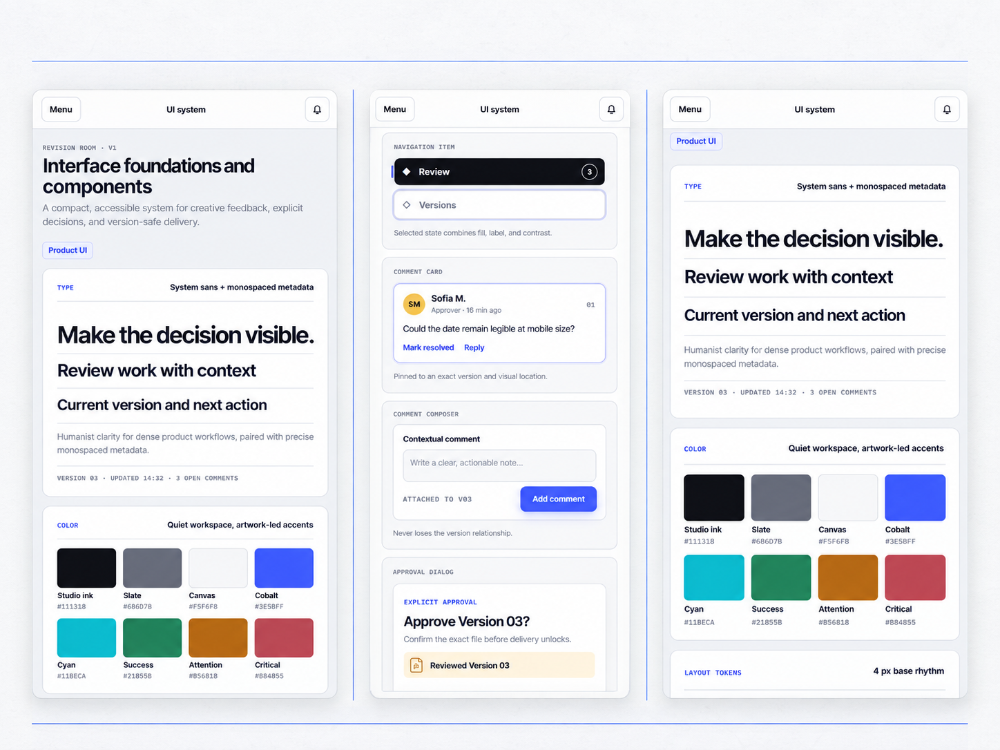
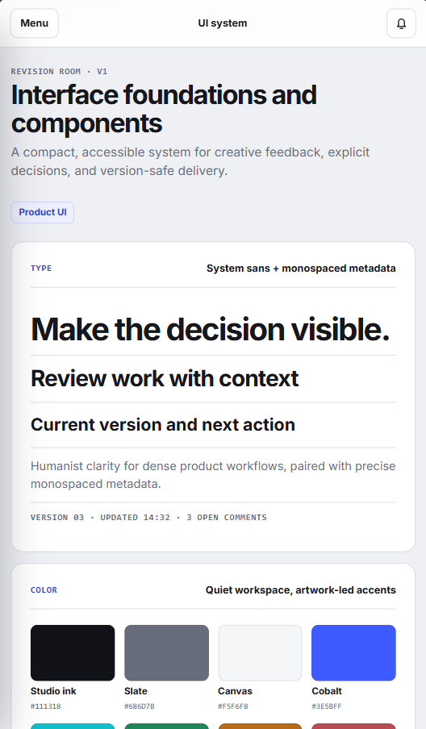
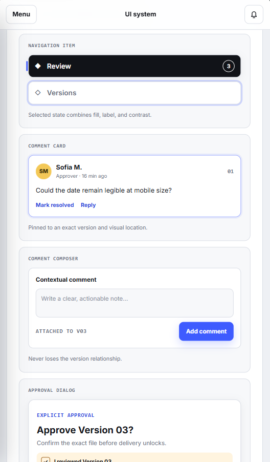
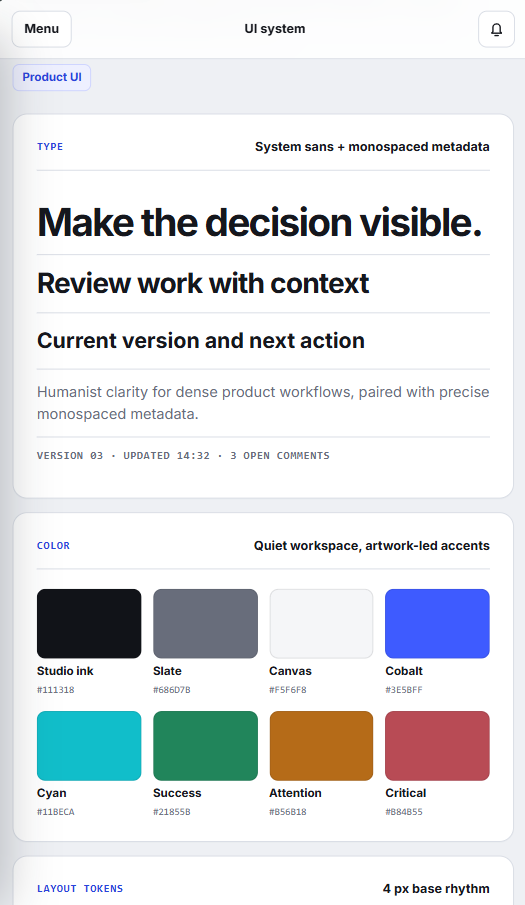
Core combinations target AA contrast and status never depends on color alone.
Comparison, navigation and approval remain operable with visible focus.
Frequently used controls maintain a minimum target of 44 pixels.
Transitions support reduced-motion preferences without hiding state changes.
The current result is a responsive, navigable product prototype with a focused information architecture and reusable interface system.